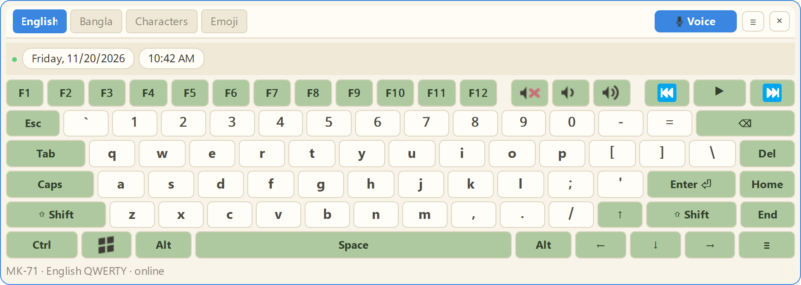

MK-71 Keyboard ডাউনলোড
বাংলা + English কিবোর্ড, ভয়েস টাইপিং ও AI প্রুফরিডিং — Windows ৭ থেকে ১১, ৩২ ও ৬৪-বিট।
📦 কোন ফাইল নামাবেন
| ফাইল | কাদের জন্য |
|---|---|
Windows_x64_Portable.zip | ৬৪-বিট Windows ১০/১১ (সবচেয়ে সাধারণ) — আনজিপ করে চালান, ইনস্টল লাগে না। |
Windows_x32_Portable.zip | পুরোনো ৩২-বিট Windows ৭ / ৮.১। |
Windows_x64_Installer.zipWindows_x32_Installer.zip | সেটআপ উইজার্ডসহ — Start Menu ও Uninstall এন্ট্রি চাইলে। |
MK-71 Keyboard - User Guide.pdf | ২০ পৃষ্ঠার বাংলা ব্যবহার নির্দেশিকা (প্রতিটি বিল্ডের ভেতরেও থাকে)। |
🧭 ধাপে ধাপে (পোর্টেবল)
- রিলিজ পেজ থেকে
Windows_x64_Portable.zipনামান। - জিপটি যেকোনো ফোল্ডারে আনজিপ করুন (যেমন
D:\MK-71) — জিপের ভেতরেই চালাবেন না। - ভেতরের MK-71 Keyboard.exe চালান। প্রথমবার Windows সতর্কতা দিলে More info → Run anyway।
- উপরে টপ বার আসবে: 🎙 মাইক, বাংলা/English বাটন আর বাকি আইকন।
- টাইপ করতে ⚙ → On-screen keyboard (Ctrl+Alt+O); অন্য অ্যাপে বাংলা লিখতে Ctrl+Alt+K।
ইনস্টলার দিয়ে
ইনস্টলার জিপ আনজিপ করে MK-71 Keyboard Setup.exe চালান → কোথায় ইনস্টল হবে বেছে নিন → Install।
সেটিংস থাকবে %APPDATA%\MK-71 Keyboard\-এ।
✨ যা যা আছে
দুটো ভাষা, এক অ্যাপ
Avro/ফোনেটিক ও ফিক্সড বাংলা লেআউট, পূর্ণ English QWERTY।
৯টি বাংলা লেআউট
Avro phonetic, Banglish, Bijoy Bayanno, Inscript, Khipro, Munir Optima, National (Jatiya), Probhat, Unibijoy — সাথে নিজের লেআউট Import।
এনকোডিং কনভার্টার
ANSI / Bijoy / Probhat ↔ Unicode।
সাজেশন ও অটো-কারেকশন
পরের শব্দ, তারিখ, সময়, সংখ্যা, ইমোজি, ক্যালকুলেটর।
আনলিমিটেড ভয়েস টাইপিং
মাইকে বলুন, লেখা বসে যাবে (Ctrl+Alt+V)।
AI প্রুফরিডিং (ঐচ্ছিক)
বানান-যতিচিহ্ন, সমার্থক শব্দ, অনুবাদ।
অফলাইন ও প্রাইভেট কাজ চলছে
কোনো ট্র্যাকিং, অ্যাকাউন্ট বা ক্লাউড সিঙ্ক নেই। 🚧 কাজ চলছে — ফিচারটি খুব শীঘ্রই যোগ করা হবে।



🖥️ সিস্টেম চাহিদা
- Windows 7 SP1 / 8.1 / 10 / 11 — ৩২ বা ৬৪-বিট।
- Windows 7/8.1-এ Visual C++ 2015–2019 runtime + KB2999226।
- প্রায় ২৫০ MB ফাঁকা জায়গা; ইন্টারনেট শুধু ভয়েস বা AI ব্যবহার করলে।
❓ প্রশ্ন ও উত্তর
কোন ফাইল নামাবো? ৬৪-বিট Windows-এ Windows_x64_Portable.zip; পুরোনো ৩২-বিটে
Windows_x32_Portable.zip। উইজার্ডসহ চাইলে Installer জিপ।
ইনস্টল না করে চালানো যাবে? হ্যাঁ — পোর্টেবল জিপ আনজিপ করে EXE চালালেই হয়; সেটিংস ওই
ফোল্ডারের data-তে থাকে, তাই পেনড্রাইভে নিয়েও ব্যবহার করা যায়।
SmartScreen সতর্কতা কেন? বিল্ডটি কোড-সাইন করা নয়, তাই Windows চিনতে চায়। More info → Run anyway চাপলেই চলে; অ্যাপটি GNU GPL v3.0 লাইসেন্সে প্রকাশিত।
ভাষা কীভাবে বদলাবো? টপ বারের বাংলা/English বাটন, অথবা Ctrl+Shift+L।
আপডেট কীভাবে? নতুন রিলিজ এলে জিপটি আবার নামিয়ে আগের ফোল্ডারে বসিয়ে দিন — সেটিংস
data ফোল্ডারে থাকায় হারায় না।
অ্যাপের নাম MK-71 Keyboard; Mk71 Keyboard, mk71 keybord, Mk71-keybord, MK 71 keyboard — এই বানানগুলো দিয়েও একই অ্যাপ খোঁজা যায়।